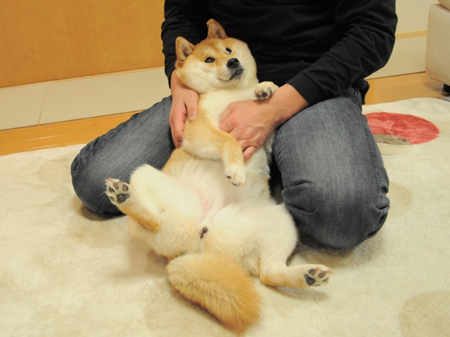
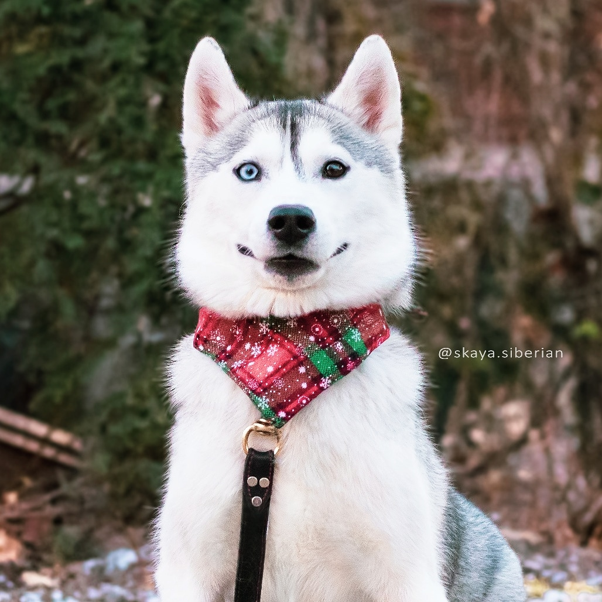

Bacon Q Dog

Bacon Q. Dog is a 9yr old labradoodle. He prefers to spend his days lounging among the three different beds/couches that his family has gifted him. He enjoys a walk or two around the neighborhood, as long as he can pretend that he doesn't see any of the other animals to avoid the embarrassment of not wanting to admit he has no wolf-like skills in chasing them.
At night just as the rest of the family is ready to relax, Bacon suddenly wants to release all of his energy. He will place his toys on a mini couch and frantically drag the couch around, giving his toys "a ride." There is also a lot of rolling. Lots and lots of rolling.
Photo Gallery


Likes
- Playing fetch
- Treats
- Going on walks
Kabosu
Kabosu is a shiba inu from Japan who inspired the viral internet meme, doge.
Loves chasings tennis balls, chipmunks, squirrels, and birds. Often found sitting by the fire in wintertime, and in sun patches when available. He’s energetic, mischievous, and easily bored. He loves people and gets grumpy if left without a lap too long.
Photo Gallery
Likes
- Blankets
- Being warm
- Barking
Pokey
Loves barking up trees, running around on the lawn, and digging in the dirt looking for moles. He especially likes getting treats and whines when he comes inside and doesn’t get a snack.
Photo Gallery
Likes
- Belly rubs
- Tug-of-war
- Sneaking onto the couch
Crusoe

Enjoys chasing butterflies in the garden, frolicking on the open field, and exploring the backyard for hidden treasures. This canine companion has a penchant for rolling in the grass and has a keen interest in chasing after butterflies. Treats are a surefire way to capture their attention, and you might hear a playful howl if they don't receive their favorite snacks upon returning indoors.
Photo Gallery
Likes
- Butterflies
- Open fields
- Grass
Skaya
Thrives on investigating the sounds of the neighborhood, sprinting through the meadow, and uncovering new scents in the soil. This four-legged adventurer has a talent for discovering hidden scents and enjoys a good game of tag with the wind. Treats are the key to their heart, and you might catch them expressing their disappointment with a gentle whimper if snack time is delayed upon entering the home.
Photo Gallery
Likes
- Meadows
- New smells
- Tag